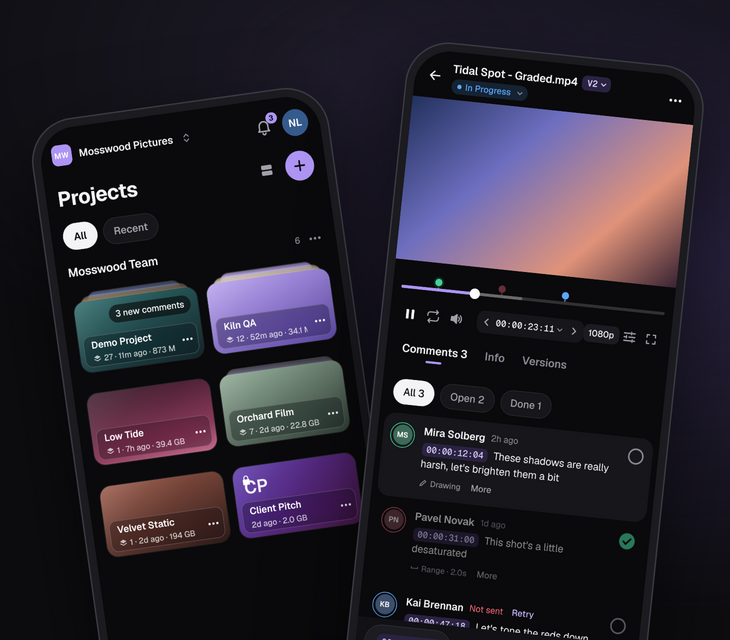
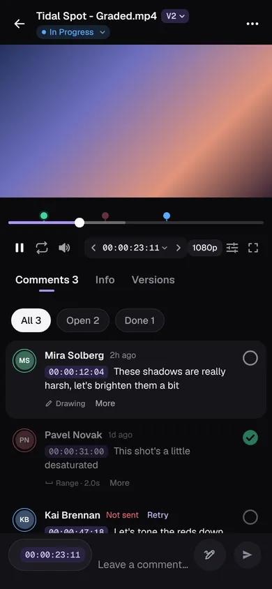
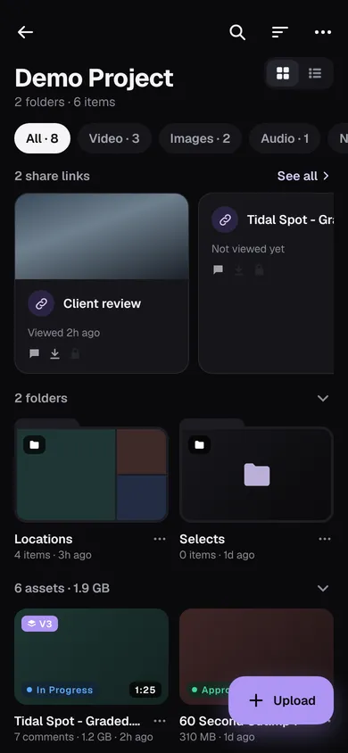
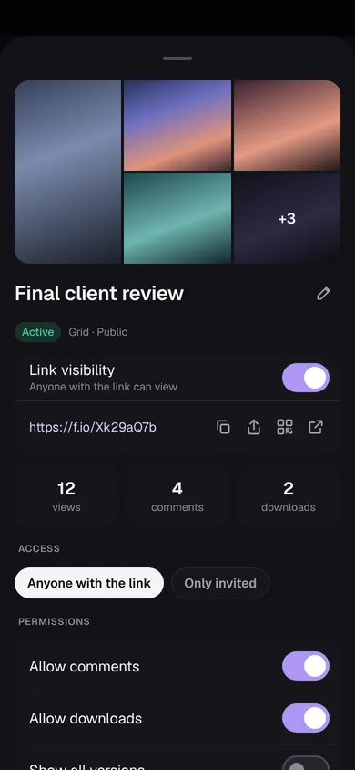
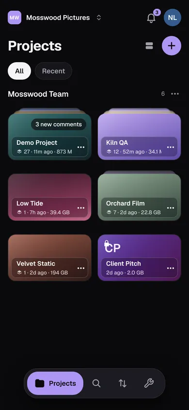

Final(ish)App Android non ufficiale per Frame.io
Rivedi i montaggi lontano dalla sala di montaggio. Guarda i video fotogramma per fotogramma con il timecode, lascia commenti con timecode e disegni, confronta le versioni e approvale dal telefono o dal tablet Android. Gratuita e open source, senza pubblicità né tracciamento.
- Android 8.0 o successivo, telefoni e tablet
- Oppure scarica l’APK da GitHub
Google Play e il logo Google Play sono marchi di Google LLC.
Non ufficiale. Final(ish) è fatta da uno sviluppatore indipendente, non da Adobe né da Frame.io. Funziona con Frame.io tramite l’API ufficiale V4, e accedi con il tuo Adobe ID sulla pagina di Adobe.

Novità della 0.2.2 (11 novembre 2026): download e copie offline rispettano il permesso di download impostato in Frame.io, i file che Frame.io non condivide con le app vengono spiegati invece di caricare all’infinito, e le notifiche sulla schermata di blocco nascondono nomi dei file e commenti. Tutte le note di rilascio (in inglese)
Cosa fa
La parte di revisione di Frame.io, in tasca. Tutte le schermate qui sotto usano la modalità demo dell’app, con progetti, persone e commenti inventati.

Guarda e commenta sul fotogramma
Un player preciso al fotogramma che parla in timecode, fatto per dare note.
- Avanza un fotogramma alla volta; timecode, tempo standard o numero di fotogrammi
- Velocità da 0,25 a 2×, loop, risoluzioni reali fino al 4K
- Maschere di formato (2.39, 1.85, 4:5, 9:16…) e guide delle aree di sicurezza
- Commenti con timecode e su intervalli, disegni sul fotogramma, segna come fatto
- Picture-in-picture, e commenti accanto al video in orizzontale

Trova la versione giusta
Workspace, progetti, cartelle, version stack e collection, da sfogliare a griglia o a elenco.
- Cambia versione, o confrontane due affiancate o a tendina, sincronizzate
- Imposta stato, valutazione e campi metadati personalizzati per approvare un montaggio
- Immagini, PDF, audio e file Word, Excel e PowerPoint
- Ricerca in tutto l’account

Mandalo al cliente
Crea link di condivisione e cambia ogni impostazione dal telefono: visibilità, commenti, download, passphrase, scadenza e filigrana. Ogni link mostra quante volte è stato visto.
Le funzioni che il tuo piano Frame.io non include appaiono in grigio, così niente si blocca a metà. Funziona con ogni piano, anche Free.

Carica dal set, lavora anche offline
- Carica file o intere cartelle dal telefono; gli upload vanno in background e riprendono dopo un calo di rete
- Scarica sul telefono singoli file o intere cartelle
- Tieni i file offline; i commenti scritti offline si sincronizzano quando torni in linea
- Notifiche per nuovi commenti, upload completati e link aperti, senza server in mezzo
E poi
- Modalità demo: prova ogni schermata senza account
- Layout per tablet con barra laterale
- I link Frame.io si aprono direttamente nell’app
- Membri di workspace e progetti, ruoli e gruppi di utenti
- Scuoti il telefono per segnalare un bug
- Italiano, inglese, tedesco, francese, spagnolo, portoghese (Brasile)
Elenco completo delle funzioni su GitHub (in inglese)
Per chi è
Per chi lavora già su Frame.io e ha in tasca un telefono o un tablet Android.
Montatori
Leggi le note del cliente in treno, salta al timecode e segnale come fatte quando le hai sistemate.
Produttori e registi
Guarda il nuovo montaggio, confrontalo con il precedente, cambia lo stato e manda il link senza aprire il portatile.
Troupe sul set
Carica clip e foto dal telefono in background e controlla i commenti tra un ciak e l’altro.
Clienti e revisori nell’account
Se sei membro di un account Frame.io, rivedi e approva dal telefono. Hai ricevuto solo un link di revisione? Si apre nel browser, non ti serve un’app.
Limiti noti
Final(ish) può fare solo ciò che l’API pubblica di Frame.io consente. Oggi questo significa:
- Account Adobe aziendali o scolastici (Enterprise o Federated ID): potrebbero non riuscire ancora ad accedere, finché Adobe non approva l’app o il loro amministratore non consente le app di terze parti. Gli Adobe ID personali funzionano.
- Account Frame.io Legacy (V3): non supportati. Gli account ancora gestiti da Frame.io hanno bisogno di un Adobe ID con la stessa email.
- Ruolo Viewer: Frame.io non fornisce media alle app per questi membri, quindi i file si aprono su Frame.io nel browser.
- Risposte e @menzioni: le risposte sono visibili e le menzioni esistenti evidenziate, ma non puoi ancora scriverle: “Rispondi” apre il file su Frame.io.
- Link di revisione di altri account: si aprono in una scheda del browser.
- Notifiche: arrivano da un controllo circa ogni 15 minuti, non sono push istantanee.
- Non disponibili: gestione dei dispositivi Camera to Cloud, impostazioni delle notifiche email, impostare un fotogramma come miniatura.
Domande
Esiste un’app Frame.io per Android?
Frame.io non ha un’app Android ufficiale (novembre 2026). Final(ish) è un’app Android non ufficiale per Frame.io, gratuita e open source, per telefoni e tablet, disponibile su Google Play. Usa l’API ufficiale Frame.io V4.
Quali account Frame.io funzionano con Final(ish)?
Gli account Frame.io V4 che accedono con un Adobe ID, con qualsiasi piano, anche Free. Gli Adobe ID personali funzionano; gli account aziendali o scolastici (Enterprise o Federated ID) potrebbero essere bloccati finché Adobe non approva l’app o il loro amministratore non consente le app di terze parti. Gli account Legacy (V3) non sono supportati.
Se il tuo account è ancora gestito da Frame.io e non da Adobe, accedi una volta a Frame.io con un Adobe ID che usa la stessa email. I dettagli sono nel README (in inglese).
Final(ish) è fatta da Adobe o da Frame.io?
No. Final(ish) è un progetto open source indipendente e non è affiliata, approvata o sponsorizzata da Adobe o Frame.io.
È davvero gratuita?
Sì. Non esiste una versione a pagamento e non ci sono pubblicità, statistiche né tracciamento. Il codice sorgente è su GitHub con licenza GNU GPL v3.0.
Posso provarla senza un account Frame.io?
Sì. La modalità demo apre tutta l’app con progetti, persone e commenti inventati, senza accedere.
Posso aprire un link di revisione che mi hanno mandato?
I link a file, cartelle e link di condivisione degli account di cui fai parte si aprono in Final(ish). Un link di revisione dell’account di qualcun altro si apre in una scheda del browser, perché l’API di Frame.io non lo rende accessibile alle app. Da Android 12 in poi attiva una volta Impostazioni › Autorizzazioni › Link di Frame.io nell’app.
Final(ish) vede la mia password o i miei file?
Accedi sulla pagina di Adobe, quindi l’app non vede mai la tua password. Progetti, file e commenti viaggiano solo tra il tuo dispositivo e Adobe/Frame.io. Lo sviluppatore riceve dati solo se scegli di inviare una segnalazione di bug. Vedi l’Informativa sulla privacy.
Open source e assistenza
Final(ish) è sviluppata alla luce del sole da uno sviluppatore indipendente in Italia, con licenza GNU GPL v3.0. Leggi il codice, compilala da te o proponi una modifica.
- Codice sorgente e documentazione
- Note di rilascio
- Un bug o un’idea? Scuoti il telefono nell’app, oppure scrivi a finalish@matteomaraffio.com
- Scrivi un articolo sull’app? Trovi tutto nel press kit
Final(ish) non è affiliata, approvata né sponsorizzata da Adobe o Frame.io. Adobe e Frame.io sono marchi registrati o marchi di Adobe negli Stati Uniti e/o in altri paesi.
Google Play e il logo Google Play sono marchi di Google LLC.